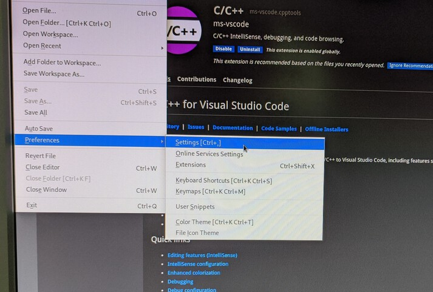
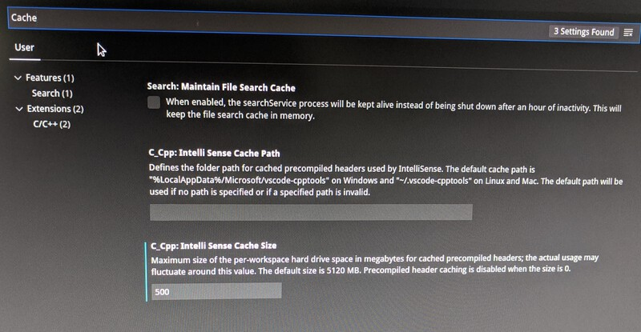

How to adjust the cache size of Visual Studio Code C++
This applies to VS Code with the C++ tools installed.
- From the main menu, choose "File", then "Preferences" and "Settings".

- Search for "Cache" settings, and set the "Intelli Sense Cache
Size" parameter to something like 500.

Last modified: Thu Jan 30 19:05:45 CET 2020